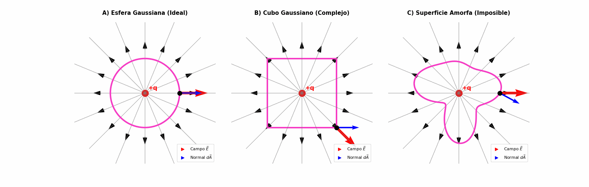

Simetría Esférica#
Vamos a demostrar el poder de la Ley de Gauss deduciendo la ecuación fundamental que inició este curso: el campo eléctrico de una carga puntual.
Imagina una carga puntual \(Q\) aislada en el espacio. Sabemos por simetría que su campo eléctrico “radia” hacia afuera en todas direcciones de manera perfectamente esférica. Por lo tanto, el campo \(\vec{E}\) solo depende de la distancia \(r\) a la carga.
Elección de la Superficie Gaussiana: Para aprovechar esta simetría, encerramos nuestra carga puntual con una esfera imaginaria de radio \(r\) centrada exactamente en \(Q\).
Show code cell source
# import numpy as np
# import matplotlib.pyplot as plt
# from matplotlib.animation import FuncAnimation
# from matplotlib.patches import Polygon
# from IPython.display import HTML
# import matplotlib.lines as mlines
#
# # === NUEVO: AUMENTAR EL LÍMITE DE TAMAÑO DE LA ANIMACIÓN A 50 MB ===
# plt.rcParams['animation.embed_limit'] = 50
#
# # === PARÁMETROS DE CONFIGURACIÓN ===
# R_esfera_base = 2.2
# L_half_cube = 2.2
# N_field_lines = 16
# animation_frames = 150 # Un poco más lento para observar bien la papa
#
# # === FUNCIÓN PARA CONFIGURAR LOS SUBPLOTS ===
# def setup_subplot(ax, title):
# ax.set_xlim(-4.5, 4.5)
# ax.set_ylim(-4.5, 4.5)
# ax.set_aspect('equal')
# ax.axis('off')
# ax.set_title(title, fontsize=15, pad=20, fontweight='bold')
#
# # === DIBUJAR LOS ELEMENTOS COMUNES Y LEYENDAS ===
# def draw_physics_base(ax, charge_label):
# ax.plot(0, 0, 'ro', markersize=18)
# ax.text(0.2, 0.2, charge_label, color='red', fontsize=16, fontweight='bold')
#
# thetas_field = np.linspace(0, 2*np.pi, N_field_lines, endpoint=False)
# for theta in thetas_field:
# ax.plot([0, 5*np.cos(theta)], [0, 5*np.sin(theta)], 'gray', linewidth=1.5, alpha=0.6)
# arrow_dist = 2.8
# ax.arrow(arrow_dist*np.cos(theta), arrow_dist*np.sin(theta), 0.05*np.cos(theta), 0.05*np.sin(theta),
# head_width=0.25, head_length=0.4, fc='black', ec='black')
#
# leyenda_E = mlines.Line2D([], [], color='red', marker='>', markersize=8, linestyle='None', label=r'Campo $\vec{E}$')
# leyenda_dA = mlines.Line2D([], [], color='blue', marker='>', markersize=8, linestyle='None', label=r'Normal $d\vec{A}$')
# ax.legend(handles=[leyenda_E, leyenda_dA], loc='lower right', fontsize=11, framealpha=0.9)
#
# # === CREAR LA FIGURA Y LOS 3 EJES ===
# fig, (ax_sph, ax_cub, ax_pot) = plt.subplots(1, 3, figsize=(22, 7))
# plt.subplots_adjust(wspace=0.1)
#
# setup_subplot(ax_sph, "A) Esfera Gaussiana (Ideal)")
# setup_subplot(ax_cub, "B) Cubo Gaussiano (Complejo)")
# setup_subplot(ax_pot, "C) Superficie Amorfa (Imposible)")
#
# for ax in [ax_sph, ax_cub, ax_pot]:
# draw_physics_base(ax, '+q')
#
# # === DIBUJAR LAS SUPERFICIES FIJAS ===
# theta_surf = np.linspace(0, 2*np.pi, 300)
#
# # 1. Esfera
# x_esfera = R_esfera_base * np.cos(theta_surf)
# y_esfera = R_esfera_base * np.sin(theta_surf)
# ax_sph.plot(x_esfera, y_esfera, '#f73bc5', linewidth=4)
#
# # 2. Cubo
# cube_vertices = np.array([[-L_half_cube, -L_half_cube], [L_half_cube, -L_half_cube],
# [L_half_cube, L_half_cube], [-L_half_cube, L_half_cube],
# [-L_half_cube, -L_half_cube]])
# ax_cub.add_patch(Polygon(cube_vertices, closed=True, fill=None, edgecolor='#f73bc5', linewidth=4))
#
# # 3. Papa Amorfa (Ecuación polar)
# r_papa_fija = 2.2 + 0.6*np.sin(3*theta_surf) + 0.4*np.cos(4*theta_surf) - 0.2*np.sin(2*theta_surf)
# x_papa = r_papa_fija * np.cos(theta_surf)
# y_papa = r_papa_fija * np.sin(theta_surf)
# ax_pot.plot(x_papa, y_papa, '#f73bc5', linewidth=4)
#
#
# # === ELEMENTOS DE LA ANIMACIÓN ===
# probe_sph, = ax_sph.plot([], [], 'ko', markersize=12)
# probe_cub, = ax_cub.plot([], [], 'ko', markersize=12)
# probe_pot, = ax_pot.plot([], [], 'ko', markersize=12)
#
# # Vectores (E y dA)
# def crear_vectores(ax):
# return (ax.quiver([], [], [], [], color='red', scale=5, width=0.018),
# ax.quiver([], [], [], [], color='blue', scale=5, width=0.01))
#
# E_sph, dA_sph = crear_vectores(ax_sph)
# E_cub, dA_cub = crear_vectores(ax_cub)
# E_pot, dA_pot = crear_vectores(ax_pot)
#
# # Cuadros de información
# # info_sph = ax_sph.text(-4.3, 3.2, '', fontsize=11, bbox=dict(facecolor='white', edgecolor='#f73bc5', alpha=0.9))
# # info_cub = ax_cub.text(-4.3, 3.2, '', fontsize=11, bbox=dict(facecolor='white', edgecolor='#f73bc5', alpha=0.9))
# # info_pot = ax_pot.text(-4.3, 3.2, '', fontsize=11, bbox=dict(facecolor='white', edgecolor='#f73bc5', alpha=0.9))
#
# def init():
# probe_sph.set_data([], [])
# probe_cub.set_data([], [])
# probe_pot.set_data([], [])
# # info_sph.set_text('')
# # info_cub.set_text('')
# # info_pot.set_text('')
# return probe_sph, probe_cub, probe_pot#, info_sph, info_cub, info_pot
#
# def animate(frame):
# p = frame / animation_frames
# vec_len = 1.0 # Largo base de flechas
#
# # ================================
# # 1. ACTUALIZAR ESFERA
# # ================================
# phi = p * 2 * np.pi
# px1, py1 = R_esfera_base * np.cos(phi), R_esfera_base * np.sin(phi)
# probe_sph.set_data([px1], [py1])
#
# E_dir1 = np.array([px1, py1]) / R_esfera_base
# dA_dir1 = np.array([px1, py1]) / R_esfera_base
#
# E_sph.set_offsets([[px1, py1]]); E_sph.set_UVC([E_dir1[0]*vec_len], [E_dir1[1]*vec_len])
# dA_sph.set_offsets([[px1, py1]]); dA_sph.set_UVC([dA_dir1[0]*vec_len*0.8], [dA_dir1[1]*vec_len*0.8])
#
# #info_sph.set_text("ESFERA\n"
# # r"$\bullet$ ¡$\vec{E} \parallel d\vec{A}$!" "\n"
# # r"$\bullet$ $|E|$ es CONSTANTE" "\n"
# # r"$\bullet$ Integral: $E \oint dA$")
#
# # ================================
# # 2. ACTUALIZAR CUBO
# # ================================
# perimeter = 8 * L_half_cube
# dist = p * perimeter
#
# dA_dir2 = np.array([0.0, 0.0])
# px2, py2 = 0.0, 0.0
# if dist < 2 * L_half_cube:
# px2, py2 = L_half_cube, (dist - L_half_cube)
# dA_dir2 = np.array([1.0, 0.0])
# elif dist < 4 * L_half_cube:
# px2, py2 = (3 * L_half_cube - dist), L_half_cube
# dA_dir2 = np.array([0.0, 1.0])
# elif dist < 6 * L_half_cube:
# px2, py2 = -L_half_cube, (5 * L_half_cube - dist)
# dA_dir2 = np.array([-1.0, 0.0])
# else:
# px2, py2 = (dist - 7 * L_half_cube), -L_half_cube
# dA_dir2 = np.array([0.0, -1.0])
#
# probe_cub.set_data([px2], [py2])
#
# r_probe_cub = np.sqrt(px2**2 + py2**2)
# E_dir2 = np.array([px2, py2]) / r_probe_cub
#
# E_cub.set_offsets([[px2, py2]]); E_cub.set_UVC([E_dir2[0]*vec_len], [E_dir2[1]*vec_len])
# dA_cub.set_offsets([[px2, py2]]); dA_cub.set_UVC([dA_dir2[0]*vec_len*0.8], [dA_dir2[1]*vec_len*0.8])
#
# #info_cub.set_text("CUBO\n"
# # r"$\bullet$ Ángulo $\theta$ varía" "\n"
# # r"$\bullet$ $|E|$ VARÍA (esquinas)" "\n"
# # r"$\bullet$ Integral COMPLEJA")
#
# # ================================
# # 3. ACTUALIZAR PAPA AMORFA
# # ================================
# r_pot = 2.2 + 0.6*np.sin(3*phi) + 0.4*np.cos(4*phi) - 0.2*np.sin(2*phi)
# dr_dphi = 1.8*np.cos(3*phi) - 1.6*np.sin(4*phi) - 0.4*np.cos(2*phi)
#
# px3 = r_pot * np.cos(phi)
# py3 = r_pot * np.sin(phi)
# probe_pot.set_data([px3], [py3])
#
# r_probe_pot = np.sqrt(px3**2 + py3**2)
# E_dir3 = np.array([px3, py3]) / r_probe_pot
#
# dx_dphi = dr_dphi * np.cos(phi) - r_pot * np.sin(phi)
# dy_dphi = dr_dphi * np.sin(phi) + r_pot * np.cos(phi)
# dA_dir3_raw = np.array([dy_dphi, -dx_dphi])
#
# # Normalizamos con manejo de errores por si la magnitud es muy cercana a 0
# norm = np.linalg.norm(dA_dir3_raw)
# if norm > 1e-6:
# dA_dir3 = dA_dir3_raw / norm
# else:
# dA_dir3 = np.array([1.0, 0.0]) # Valor de respaldo seguro
#
# E_pot.set_offsets([[px3, py3]]); E_pot.set_UVC([E_dir3[0]*vec_len], [E_dir3[1]*vec_len])
# dA_pot.set_offsets([[px3, py3]]); dA_pot.set_UVC([dA_dir3[0]*vec_len*0.8], [dA_dir3[1]*vec_len*0.8])
#
# #info_pot.set_text("SUPERFICIE AMORFA\n"
# # r"$\bullet$ Ángulo $\theta$ es CAÓTICO" "\n"
# # r"$\bullet$ $|E|$ VARÍA salvajemente" "\n"
# # r"$\bullet$ Integral IMPOSIBLE")
#
# return probe_sph, probe_cub, probe_pot#, info_sph, info_cub, info_pot
#
# # === GENERAR Y MOSTRAR LA ANIMACIÓN ===
# # anim = FuncAnimation(fig, animate, init_func=init, frames=animation_frames, interval=60, blit=True)
# # plt.close()
# # HTML(anim.to_jshtml())
#
# # === GENERAR Y GUARDAR LA ANIMACIÓN COMO GIF ===
# # anim = FuncAnimation(fig, animate, init_func=init, frames=animation_frames, interval=60, blit=True)
#
# # Guardar como GIF usando Pillow (ideal para GitHub y Jupyter Book)
# # print("Generando GIF, por favor espera unos segundos...")
# # anim.save('superficies_gaussianas.gif', writer='pillow', fps=15)
# # print("¡GIF guardado con éxito como 'superficies_gaussianas.gif'!")
#
# # plt.close() # Cierra la figura de matplotlib para no ensuciar el notebook
#
# # Si quieres previsualizar el GIF dentro de tu notebook mientras editas:
# # from IPython.display import Image
# # Image(url='superficies_gaussianas.gif')

Análisis del Flujo: En la superficie de nuestra esfera imaginaria ocurren dos cosas vitales:
El vector normal \(d\vec{A}\) apunta radialmente hacia afuera en cada punto. Como el campo \(\vec{E}\) también apunta radialmente hacia afuera, ambos vectores son paralelos (\(\theta = 0^\circ\)). Por tanto, el producto punto se simplifica: \(\vec{E} \cdot d\vec{A} = E \, dA\).
Todos los puntos de la esfera están a la misma distancia \(r\) de la carga. Por simetría, la magnitud del campo \(E\) debe ser constante en toda la superficie.
Planteamiento Matemático: Tomamos la Ley de Gauss y aplicamos nuestras simplificaciones:
Como \(E\) es constante en nuestra esfera, ¡la sacamos de la integral!
¿Qué es \(\oint dA\)? Es simplemente el área total de nuestra superficie esférica. Sabiendo que el área de una esfera es \(4\pi r^2\), sustituimos:
Resultado Final: Despejamos \(E\) y reorganizamos los términos:
¡Voilà! En apenas tres líneas de álgebra, hemos llegado exactamente a la misma ecuación empírica descubierta por Charles-Augustin de Coulomb. Sin integrales complejas, solo geometría y simetría.